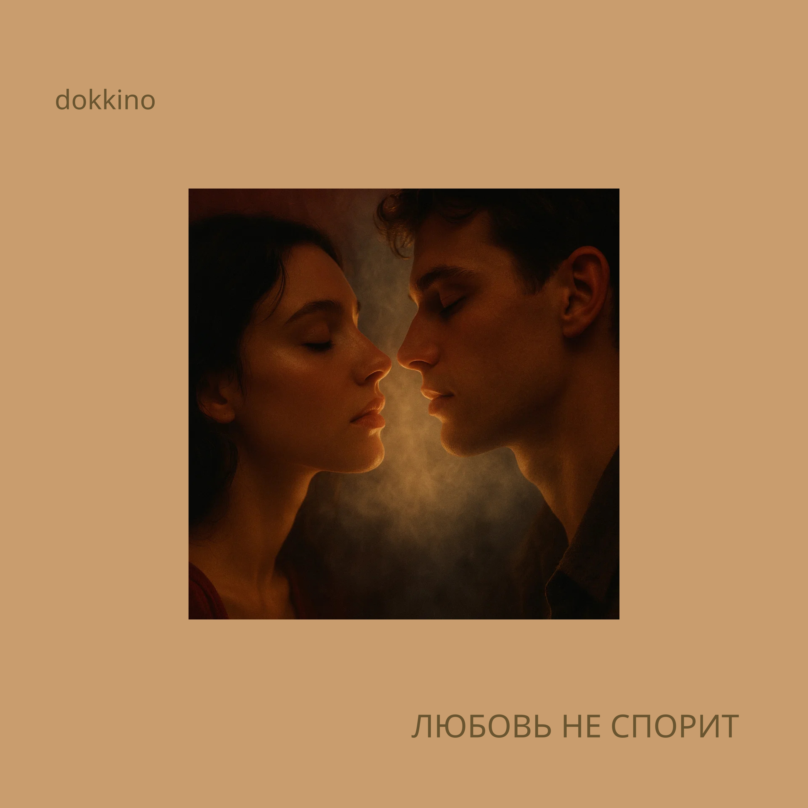

Автор текста: Сергей Мачуляк, 2020
Музыка: Сергей Мачуляк
Релиз: 28 октября 2025
© Сергей Мачуляк. Все права защищены.
«Любовь не спорит» — философская электронная композиция о различии между страстью и любовью. Песня движется от боли, крика, вопросов и внутренней борьбы к тихому пониманию: любовь не требует доказательств, не спорит и не повторяет чужих слов.
«Любовь не спорит» начинается с образа страсти как силы, которая захватывает человека целиком. Она пожирает тела, впитывает смех и слёзы, говорит стихами, кричит, запутывает и окутывает. Страсть легко принять за любовь, потому что в ней есть яркость, желание, боль, страх потери и ощущение предельной полноты жизни.
Но, исчерпав себя, она неожиданно задаёт вопрос: «А где же любовь?» Ответ рождается не в новом всплеске чувств, а в тишине.
Любовь не спорит, потому что ей не нужно доказывать своё существование. Она не стремится победить, убедить или подчинить. Она молчит не от равнодушия, а потому, что существует глубже слов. Любовь не вторит другим — она не повторяет готовых истин и не следует чужим представлениям о том, какой должна быть.
Призыв «Проснись, открой своё сердце» обращён к человеку, привыкшему искать ответы только разумом. Ум спорит, сравнивает, защищается и боится. Сердце не объясняет — оно узнаёт.
Строки «Двое — не один. Двое — в одно» говорят о трудном опыте подлинной близости. Два человека остаются собой, но между ними возникает пространство, в котором границы отдельного «я» перестают быть непреодолимыми. Это больно и страшно, потому что настоящая близость требует открытости.
Песня не даёт окончательного ответа на вопрос, зачем человеку дана игра под названием жизнь. Остаются слёзы, крик, смех и страсть. Но любовь находится не в их громкости, а в пространстве между ними — там, где человек прекращает спорить с другим, с собой и с самой жизнью.
Ближе к финалу страсть утомляется. Она уже не кричит и не поглощает. Пережив смех и слёзы, она покидает губы, словно свет давно погасшей звезды, который всё ещё продолжает путь сквозь пространство.
На её месте остаётся тихое и хрупкое слово: «Люблю».
Строки «Всё не закончено. И не растрачено. Нет у Вселенной конца» расширяют личную историю до космического масштаба. Чувства могут менять форму, но то, что было действительно прожито в любви, не исчезает бесследно.
Страсть кричит, потому что боится исчезнуть. Любовь молчит, потому что ей не нужно ничего доказывать.
Страсть пожирает тела,
Впитывает смех и слёзы.
Говорит стихами, без прозы,
Криком животным кричит
Сквозь слёзы,
Сквозь слёзы.
Запутывает, окутывает,
А потом удивлённо шепчет:
А где же любовь?
А любовь — тишина.
Она никогда не спорит.
А любовь молчит —
Она никому не вторит.
А любовь — тишина.
Она никогда не спорит.
А любовь молчит —
Она никому не вторит.
Проснись,
Открой своё сердце.
Не бойся, проснись.
Пусть ум замолчит,
И сердце твоё говорит.
Двое — не один.
Двое — в одно.
Да — это больно.
Да — это страшно.
Только это и важно.
Кто из живущих ответит — зачем это всё?
Ответит и будет правым?
Никто.
Так устроена эта игра
Под названием жизнь,
Которую мы убиваем,
Или она — нас?
Слёзы, крик.
Смех, страсть...
А где Любовь?
А любовь — тишина.
Она никогда не спорит.
А любовь молчит —
Она никому не вторит.
Зачем игра — не настоящая?
Зачем?
Кто скажет, кто ответит?
Никто...
Никогда не ответит.
Страсть, утомлённая от смеха и слёз,
С губ улетает, как свет с мёртвых звёзд.
С глаз, полных правды, летит в синеву
Тихое, хрупкое слово — «люблю».
Всё не закончено.
И не растрачено.
Нет у Вселенной конца.
Страсть утомилась от слёз,
С губ улетает до звёзд.
Тихое, светлое, летит в синеву
Хрупкое... слово — «люблю».
А любовь — тишина.
Она никогда не спорит.
А любовь молчит —
Она никому не вторит.